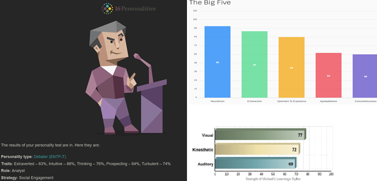
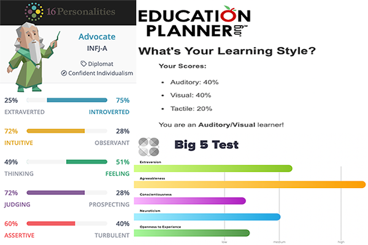
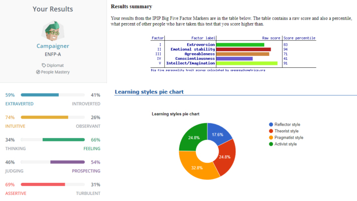
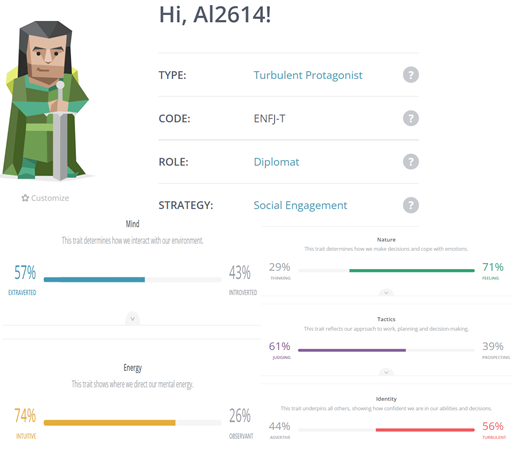
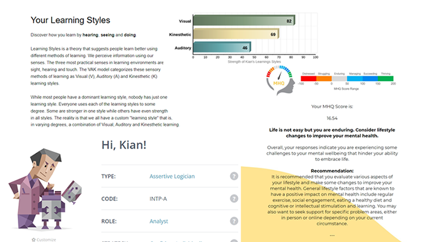

The Procrastinator's
Michael Ridgway - s3956710
My name is Michael Ridgway, I originate from New South Wales however now live on the beautiful Gold Coast, Queensland. I currently work as an Animal Attendant at a boarding kennel. My interest in IT started at the age of seven, compelled to learn all of the secrets and exploit bugs within a computer game, as well as play them for what they are on my parents good old Windows 94 computer with dial up Internet. Growing up, if I wasn't gaming, I was trying to fix all of the viruses and errors installed through my Limewire usage. Before starting this course, my knowledge in IT was self taught through gaming, Youtube, and general trial and errors. I am currently 28 years of age and cannot wait to see where this ever so expanding journey of IT takes me as it is a true passion of mine.
As my dream is to work in a tech company in gaming or as a software developer, my passion is still the same, as are my goals set in place to achieve what i am chasing. I dream of working in such a job role as it excites me and I am passionate about doing so. Working as a Software developer as such is something that has always sparked a flame in my life, I love talking about it, even working on all things related to doing so, I also find the hairs on the back of my neck stand up when talking about something i have such a passion for. So why wouldn't I persue something that, as opposed to feeling like a job, is more of a hobby that I get paid for! The older I get, the more I realise how precious and short life really is, so again, why not persue something that makes me happy, and potentially travel the world while doing so!.
Peter Thomson - s3950560
My name is Peter Thomson, I was born and raised in Western Australia attending school in the city before moving outwards to the country. Up until this point in my life I have worked predominantly as a chef, with some positions allowing me to work and see some extremely remote and amazing areas of this country. My interest in IT mainly stems from a love of computer games and digital art with my experience generally centred around the same topics, general troubleshooting and the like when games or the pc in general spits out one of those wonderful errors they like to give from time to time. Since starting my studies through RMIT I have developed a stong interest in web design/development.
My ideal job as outlined in assignment 1 and 2 to work at SpaceX as a software engineer is still something that is a passion and a driving force for me succeed in this course, and indeed the degree as a whole, then out into the industry. While I don't have a distinct career plan moving forward, it is my aim to hopefully move onto a job pathway out of university that will gain me the necessary skills in LabView programming, and object-oriented programming, as these are strongly desired skills for my ideal position as a software engineer. That being said, through this course so far, the exposure to the front-end development of HTML and CSS, I have found some questions starting to arise. I have genuinely enjoyed the creative side of using particularly CSS, far more than I had anticipated, this however, from the limited research I have done, is an incredibly competitive side of the IT industry. I look forward to seeing if these thoughts of aiming at a more front-end focused position, grow or subside the further I progress through this course.
Alexander Sloan - s3923383
My name is Alexander Sloan; I live in a small country town in Victoria, Australia, where I work as a freelance video editor. Since the age of about five, I was glued to computer screens. Captured by this new avenue of creation, I began playing with 3D modelling using SketchUp and recording home videos on Photo Booth. At age 11, I found my first true passion-video editing. I would spend the next eight years teaching myself the ins and outs of video production and filmmaking, at some points working professionally, but mainly just as a hobby for my enjoyment. Today, I am 19 years old, and I believe I have found my second true passion- programming, and I can't wait to see where it takes me.
My ideal job is very fluid at the moment, as my primary pursuit in the IT industry is solely to learn and expand my abilities. For me, learning about IT and programming is more of a hobby or passion, so it would be reasonable to say that my ideal job is simply to work on my own projects. I have been working part-time on a personal Discord bot for the past six months, which has been surprisingly gratifying. It took a lot of trial and error, but I managed to break new ground and develop features that no other bot has. The experience has lit a fire in my heart to create innovative and exciting programs, and I'm happy to say that our project idea for this assessment is one of them.
Alexios Angelopoulos - s3951526
My name is Alexios Angelopoulos although people call me Alex, apparently my student ID is s3951526 and student email is s3951526@student.rmit.edu.au. I was in a wheelchair since I was five years old with dystonia which is essentially makes it difficult to move that's effected the right side of my body, I'm Greek and Italian, although being born in Australia, i celebrate two easters. I had graduated from year 12 VCE last year and now studying online with open universities on introduction to Information Technology at RMIT. My hobbies are game that include strategy and card games, video games, puzzles, drawing, reading, lawn bowl, DJ which I do psycodelic and psycodelic trans or other stuff that interest me, I also have a dog named jojo.
My ideal job is still going to be at Michael Page Information Technology or somewhere similar cause I feel as this position being a software engineer will give me more freedom a make stuff that the client wants to make this will enable me to find ways to solve issues that might appear and to achieve the product or a functions that the client is asking for and to learn stuff such as new programming language, figure out new ways to solve problems and to adapted to new situations as I carry out to make of what the client want with my expertise. The skill that are required for the position is interchangeable with other job position such as software developer which is Michael's position at patient zero and software developer which is Alexander's position at data processor, software engineer which is Peter's at space X, game developer which is Kian's position at studio iO where these positions use the similar NET, C#, scripting experience such as Python and other programming languages, I love to figure out ways to achieve a goal and to enrich my understanding.
Kian Yuke Hill - s3950817
My name is Kian Yuke Hill, I live in a beach side town in QLD. Where I work as a Teacher aide/ Kind of a IT apprentice of sorts. From a very young age I have been addicted to technology whether that be the latest gaming system or even the old first gen ipods! My interest peaked when I realised I could utilise technology to help most people. I'm currently in the early stages of learning to upgrade a student data system in a government school. And on the side, I'm am still very addicted and fascinated in the world of video-games. I enjoy the thought of making a creative space where others can truly express their most artistic and creative selves. I'm 23 and only just realising this passion one day at a time. I can't wait to work in a team that focuses more on the enjoyment of the industry and less on the money.
Since my interest and dreams rely heavily on programming and understanding the fundamentals behind languages and how you can utilise them all together. I imagine I would be able to enjoy the video game programming life whilst still having a so called “safe job” like a data analysist. granted I've never been the one to choose the safer option. Working as a software developer has always been a big passion in my life and always will be… whether that is paid or free (for a hobby). It to me sounds just like the metaverse. It is vast open and wild and VERY open to an artistic touch. It is something that gets more enjoyable in time and if you can do something you love whilst making a buck then why not pursue it professionally. I like to think logically but I can't help staying in the gaming industry it interests me far too much. So why not live in the world of make believe!
Group Process & Career Plans
As evident from our individual career aspirations, we all have fairly similar goals, all having a passion for going down the software engineer or game development route. Through discussion however we have talked about these goals very likely evolving as we progress through university and as we are exposed to different aspects of the IT industry. One thing is clear we all have a passion for technology.
This group worked together extremely well through assignment 2, with all group members attending meetings and showing an all-around interest in the project. Moving into assignment 3 we aim to improve our meetings by keeping them to a more manageable time limit, to not be overwhelmed with too much information, as well as improving the way tasks are delegated amongst the team.